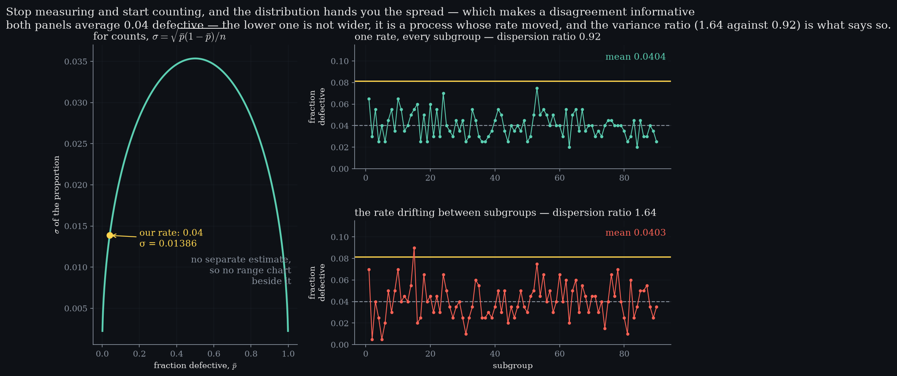
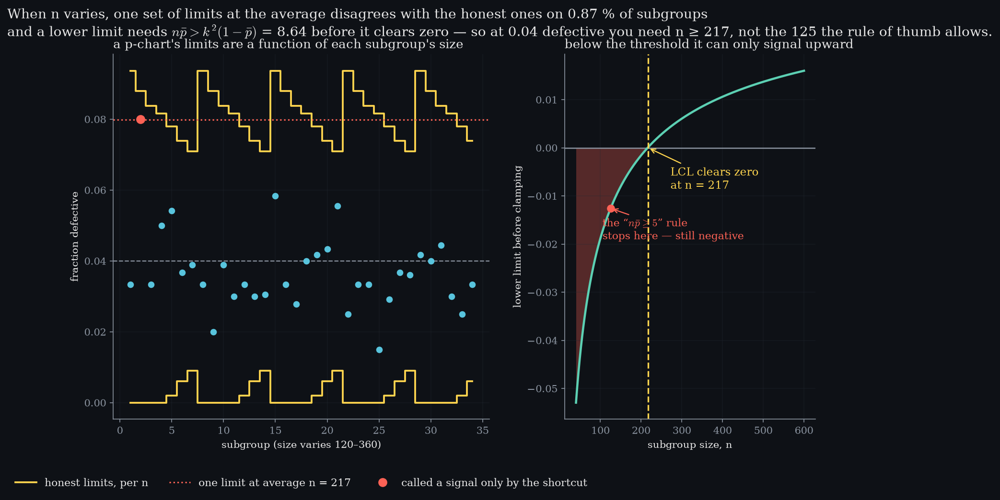

Level 10 · chapter ten
Counting, not measuring
Stop measuring and start counting, and the distribution hands you the spread. Part III is hands-on: this level has no video and one thing to drag.
after Level 9 — detection, and memory beating sensitivity·leads to Level 11 — relationships, not yet written
- 10.1The spread is not a free parameterfor a count, the mean fixes the standard deviation
- 10.2Same mean, different scattera variance ratio you get for free
- 10.3Four charts, two questionsnp, p, c, u — and nothing else to remember
- 10.4When the limits have to breathethe average-n shortcut, priced
- 10.5Where the lower limit goes, not the rule of thumb
- 10.6Annex — capability when the shape is wrongthe normal tail understates a count tail
The spread is not a free parameter
Levels 3 to 5 spent their time estimating a spread, because for a measurement the spread is a separate fact about the process — it has to be measured, and it carries its own error. what changesA measurement needs a range chart beside it. A count does not, and this is why.Stop measuring and start counting, and that stops being true.
Count defective items and the result is binomial, so its standard deviation is fixed by its mean. the mean fixes the spreadp̄ assumed0.04n200σ of the proportion0.01386c̄ = 6.5σ = 2.550Count defects and the result is Poisson, where the variance is the mean. Either way nothing is estimated separately.
Nothing on the right-hand side is estimated separately. For a count the mean fixes the spread, which is why an attribute chart has no range chart beside it — and why a disagreement between the two is information rather than noise.
Which makes a disagreement informative. free diagnosticObserved variance over theoretical. One for a genuine binomial; above one and the subgroups were not rational.If the observed scatter is wider than the binomial says it must be, the binomial assumption is wrong — and the usual reason is that the rate moved between subgroups.
Same mean, different scatter
Two processes, both averaging four per cent defective. observed ÷ binomial varianceone rate throughout0.92rate drifting1.64One has a single rate behind every subgroup; in the other the rate drifts — a shift change, a supplier lot, an operator. The means are indistinguishable and the charts are not.
The second process is not wider. It is a process whose rate moved, and every limit computed from the binomial is too tight for it — so it will trip its own chart for a reason that has nothing to do with the thing being counted. This is what rational subgrouping means for attribute data.

Four charts, two questions
The four attribute charts are usually presented as four names to learn. question oneDefective items, or defects? One is binomial, the other Poisson.They are two binary questions, and once they are asked the name is determined.
Are you counting defective items — each thing inspected is either good or bad — or counting defects, where one thing can carry several? the whole selection ruleitems, n constantnp-chartitems, n variesp-chartdefects, n constantc-chartdefects, n variesu-chartquestion twoConstant subgroup size, or not? That is the only other thing the choice depends on.And is the subgroup size constant?
That is the entire decision. There is no fifth chart hiding behind a third question.
When the limits have to breathe
If the subgroup size varies, the limits vary with it — a bigger subgroup gives a tighter proportion, so the band narrows. average-n limits against honest onessubgroup sizes120–360false signals0.77 %signals missed0.10 %disagreement0.87 %The tempting shortcut is one set of limits computed at the average size.
Over sizes from 120 to 360 that shortcut disagrees with the honest limits on 0.87 % of subgroups, and most of the disagreement is false alarms rather than misses — it spends more than the whole false-alarm budget Level 6 designed for.Level 7's languageA fixed cost for nothing bought. The shortcut is not a trade, it is a leak.

Where the lower limit goes
At low counts the lower limit goes negative, and a chart cannot draw a negative fraction. at n = 200lower limit, raw-0.16 %as drawn0n needed217It gets clamped to zero, and a limit at zero is not a limit: the chart can only ever signal upward.
There is a threshold and it is exact. the rule of thumbA weaker version of the same arithmetic. At the limit is still negative.The lower limit clears zero only while , which at three sigma is 8.64. At four per cent defective that means subgroups of 217 — not the 125 the familiar “np̄ ≥ 5” rule of thumb allows.
- Upper limit
- —
- Lower limit
- —
- n for a lower limit
- —
Drag either one. The limits are computed here from the
same formulas spclab.counting is tested against — nothing is
looked up, and the lower limit is shown before it is clamped.
Drag the two controls. computed hereThe lab runs the same formulas spclab.counting is tested against, in the browser.The status reads ONE-SIDED whenever the lower limit has been clamped, and the third tile tells you the subgroup size that would fix it.
Annex — capability when the shape is wrong
Level 8 turned a spread into a ppm by walking out the tail of a normal curve. P(16 or more defective)exact tail0.00700normal approximation0.00195ratio×3.60Counts are not normal, and the approximation fails in the direction that flatters the process.
The true probability is 3.6 times what the normal approximation reports. so what to doUse the exact tail. It is one incomplete beta, and this site already had one for Level 5.Quoting a normal-based ppm on count data is therefore not a rounding error — it understates the risk by a factor you would notice. The approximation improves as the counts grow; it is wrong where attribute data usually lives.